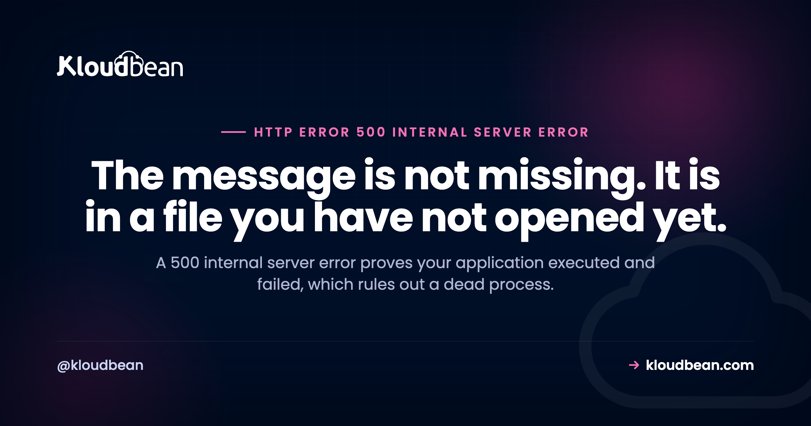

500 Internal Server Error: Your Code Ran and Threw

Almost every guide to the 500 internal server error opens with a list of things to try. That is the wrong shape for this problem, because a 500 is not one fault with one fix. It is a server telling you that something in your application blew up and that it is refusing to say what. The useful work is retrieval: the real error message already exists, written to a file, usually seconds ago. Ten minutes of reading a log beats two hours of trying fixes in order, and this guide is mostly about getting that message out of whichever stack you are running.
Per RFC 9110, the server hit an unexpected condition that stopped it fulfilling the request. It is a deliberately generic catch-all, so the code itself carries no diagnostic value. What it does tell you is valuable by elimination: your application process was alive, accepted the request, ran, and raised something it could not handle. A dead or unreachable process does not produce a 500, it produces a 502 or a 503. So skip the browser entirely and read the server's error log, where the actual exception, stack trace, or fatal error was recorded.
What a 500 rules out, which is the useful part
Start here, because it narrows the search more than any fix list will.
For your visitor to receive a 500, quite a lot had to work. DNS resolved. TCP connected. TLS negotiated. The reverse proxy accepted the request and successfully handed it to your application. Your application received it, started executing, and then failed. Every one of those layers is now cleared, and that is why the 500 is genuinely informative despite saying nothing.
Compare that against its neighbours, which is the fastest way to know whether you are even on the right page:
| Code | What it proves | Where to look |
|---|---|---|
| 500 Internal Server Error | Your app ran and raised | Application error log |
| 502 Bad Gateway | The proxy could not get a usable answer. Often the process is dead or on the wrong port | 502 Bad Gateway |
| 503 Service Unavailable | Nothing is there to serve, or it is deliberately refusing | 503 after a deploy |
| 504 Gateway Timeout | It answered, too slowly | 504 Gateway Timeout |
| 520 to 527 | Cloudflare's own codes, generated at the edge | Cloudflare 5xx codes |
That distinction is worth holding on to. People often describe a crashed application as throwing 500s, and it usually is not. If your Node process exits, nginx has nothing to connect to and returns 502. If you are seeing genuine 500s, your process is up. Which means restarting it, the reflex fix, frequently changes nothing.
Why the page tells you nothing, and why that is correct
The blankness is a security decision, not an oversight.
An exception message is a gift to an attacker. Stack traces leak absolute file paths, framework and dependency versions, database table and column names, and now and then a credential someone interpolated into a connection string. So every production stack defaults to swallowing the detail and returning a bare 500. Express, for instance, includes the stack trace in its default error response only when NODE_ENV is not production, and PHP ships with display_errors off for deployment for the same reason.
Which leads to the single most common piece of bad advice about this error: that you should turn error display on to see what is wrong. Do not, on a live site. Turn error logging on instead. Same information, delivered to you rather than to everyone who loads the page.
Get the real message: where each stack writes it
This table is the practical core of the page. Find your row, tail the file, and reproduce the error.
| Stack | Where the real error lands |
|---|---|
| nginx | /var/log/nginx/error.log. For PHP sites the interesting lines are the ones tagged FastCGI sent in stderr. |
| Apache | /var/log/apache2/error.log on Debian and Ubuntu, /var/log/httpd/error_log on RHEL family. |
| PHP-FPM | Its own pool log, plus whatever error_log in php.ini points at. Fatal errors appear here even when the browser shows nothing. |
| WordPress | wp-content/debug.log, once WP_DEBUG_LOG is enabled. |
| Laravel | storage/logs/laravel.log. Check it is writable, because a Laravel install that cannot write its own log is itself a cause of 500s. |
| Node and Express | Wherever your process manager sends stdout and stderr. Under PM2, pm2 logs. |
| Django and Flask | Your LOGGING configuration, or the WSGI server's log if you have not set one up. |
Then watch the log while you trigger the error, rather than scrolling back through history and guessing which entry matches:
# Watch, then reload the failing page in another window.
tail -f /var/log/nginx/error.log
# PHP fatals surfacing through nginx look like this:
grep -i "FastCGI sent in stderr" /var/log/nginx/error.log | tail -20
# Confirm the proxy is actually recording 500s, and on which URLs.
awk '$9 ~ /^5/ {print $9, $7}' /var/log/nginx/access.log | sort | uniq -c | sort -rn | headThat last command earns its place. If the access log shows 502 rather than 500, you are on the wrong page and should be reading about 502 Bad Gateway instead. Confirm the code before you commit to a diagnosis.
Turning on logging without exposing your app
If the log is empty, the detail is being discarded before it is written. Fix that first, and keep it invisible to visitors.
WordPress. Three constants in wp-config.php, above the line that says to stop editing. The third one is the one people forget, and it is what keeps the errors out of the page:
define( 'WP_DEBUG', true );
define( 'WP_DEBUG_LOG', true ); // writes wp-content/debug.log
define( 'WP_DEBUG_DISPLAY', false ); // and does not show visitors a thingPHP generally. Log, do not display:
log_errors = On
error_log = /var/log/php/error.log
display_errors = OffLaravel. Leave APP_DEBUG=false in production and read storage/logs/laravel.log. Setting APP_DEBUG=true on a live site publishes a full interactive stack trace, including environment variables, to anyone who triggers the error. It is a genuine disclosure incident, not a debugging step. If you need that view, reproduce on a staging copy with its own environment.
Django. Same rule, more bluntly: DEBUG = False stays, and you configure LOGGING to write exceptions somewhere you can read. One neighbouring trap worth knowing, because it wastes time: an ALLOWED_HOSTS mismatch does not give you a 500. It gives you a 400. If you are chasing a 500 and find Invalid HTTP_HOST header in the log, those are two separate problems.
Node and Express. Do not rely on the framework default. Write an error handler that logs the whole error and returns something plain, and register it last:
// Must be last, and must take four arguments to be treated as an error handler.
app.use((err, req, res, next) => {
console.error({ msg: err.message, stack: err.stack, url: req.originalUrl });
res.status(500).json({ error: 'Internal Server Error' });
});One version-specific detail that decides whether your handler ever runs. Per the Express documentation, starting with Express 5, handlers and middleware that return a promise call next(value) automatically when they reject or throw. On Express 4 they do not, so an async rejection escapes the handler entirely, becomes an unhandled rejection, and can take the process down with it. That is the mechanism behind a confusing pair of symptoms: tidy 500s on Express 5, and intermittent 502s on Express 4 from the very same bug, because there the process died instead of responding. Check which major version you are on before concluding your error handling is broken. While you are in there, structured logging makes these searchable rather than something you eyeball.
The causes worth checking first
Ordered by how often they turn out to be the answer, with the tell for each.
An uncaught exception in your own code. The overwhelming majority. A null dereference, a failed external API call with no error branch, a type error on an edge case. The tell: it started right after a deploy, and it fails on specific URLs rather than all of them.
A database the app cannot reach or query. Wrong credentials after a migration, a connection limit reached under load, a query referencing a column that a migration has not created yet. The tell: everything is broken at once, and the log names the database driver. Connection-limit cases are the sneaky ones, because they only appear under traffic and look intermittent.
A missing or wrong environment variable. Config read at boot that comes back undefined, then gets used. The tell: it works locally and fails on the server, which is the classic signature of configuration that lives on your laptop rather than in the environment.
Exhausted PHP memory. Allowed memory size of N bytes exhausted in the log, and a page that fails on heavy operations like an import or a large media upload while the rest of the site is fine.
A broken .htaccess, on Apache only. One unsupported directive, often left behind by a plugin, and every request under that directory returns 500. The tell is unmistakable: the whole site dies at once, the error log says something like Invalid command, and renaming the file instantly restores service. This is the one 500 with a genuinely fast fix. It does not apply to nginx, which has no per-directory config file.
File permissions and ownership. Files the web server user cannot read, or, less obviously, files it considers too permissive. Under suexec and similar guards, a group or world-writable script is refused as unsafe. Which is how chmod 777 causes the error people apply it to fix.
A syntax error in something loaded at startup. An edit saved directly on the server, a truncated upload over a flaky FTP session. The tell: it broke the instant a file was saved, and it affects every route.
Fixes that cannot work, and the mechanism why
These appear near the top of most search results for this error. Understanding why they are useless saves you from working through them.
Clearing your browser cache. The exception was raised inside your application, on the server, before a single byte of any cached asset was consulted. Nothing in your browser participated in the failure. The reason this myth survives is that a 500 is sometimes transient, so a reload a minute later works and gets credited to the cache clear.
Reloading, mostly. Worth exactly one attempt, since a connection-limit or memory spike can be momentary. If it fails twice, it is deterministic and reloading is just a slower way of not reading the log.
Setting everything to 777. Actively harmful in two directions. It grants write access to every user on the machine, and, as above, security guards reject over-permissive scripts, so it can be the direct cause of your 500. Directories generally want 755 and files 644, with ownership set to the user your web server runs as.
Restarting the application. Reasonable for a 502 or a 503, largely beside the point for a 500. A 500 already proved the process is alive. Restarting clears leaked memory or a stuck pool, so it is not worthless, but if your code raises on a code path, it will raise again.
Raising every timeout. Wrong error. Timeouts produce 504 and 408, not 500.
The nginx specific reading
Since nginx does not run your application, a 500 with nginx in front is one of two quite different situations, and telling them apart takes one look at the log.
The 500 came from your app, through nginx. Normal case. PHP-FPM or your Node process returned it, nginx passed it along. The nginx error log carries the upstream's stderr, tagged FastCGI sent in stderr for PHP.
nginx generated the 500 itself. Less common and more distinctive. Something in nginx's own handling failed: a rewrite loop hitting the internal redirect limit, a permission problem reaching a file, a temp directory it cannot write to. The tell is that the error log line has no upstream in it and names an nginx internal instead, for example rewrite or internal redirection cycle.
The distinction matters because the fixes live in different files. One is your code, the other is your server config. If your proxy layer generally is unfamiliar territory, nginx as a reverse proxy for Node covers the shape of a correct configuration.
WordPress, specifically
Most WordPress 500s are a plugin or theme raising a PHP fatal error, which is why the standard advice is to deactivate plugins. That advice works and it is also a blunt instrument, so do it in an order that gives you information.
Enable WP_DEBUG_LOG first, as above, then reproduce. The log usually names the offending file outright, and a path under wp-content/plugins/some-plugin/ ends the investigation in one step. Deactivating everything and reactivating one at a time is the fallback for when the log is unavailable, not the first move.
Two WordPress specific notes. A fatal error during an update can leave the site in maintenance mode after the update finishes, which presents as a different message entirely and is covered in briefly unavailable for scheduled maintenance. And if the 500 arrived with a plugin or core update, the fastest safe path is not debugging at all: restore, verify the site works, then reproduce the upgrade somewhere that is not production. Which is what a backup you have actually tested is for.
Where hosting fits, honestly
The honest boundary first. A 500 caused by your own uncaught exception is your bug, and no host can fix it for you. What a platform can do is remove the friction between you and the message, and cut the number of 500s that come from the server rather than the code.
On Kloudbean both application and server logs sit in the same dashboard as the server itself, so the first step of this guide does not require an SSH session and a hunt for the right path. The reverse proxy and the stack are managed and patched, which retires the class of 500s that come from a hand-edited config file or a permissions change nobody recorded. Staging for WordPress and Laravel means an update that triggers a fatal error does it somewhere harmless, and automatic backups mean the restore path exists before you need it. Seven cloud providers to run on, free SSL issued and renewed, and free migration assistance if you are moving something that already works.
The line stays where it always is. Managed covers the server, the stack, TLS, backups, and patching. Your application code and your data remain yours, and that is the half a 500 usually lives in.
Related reading
The rest of the 5xx family, each a different failure: 502 Bad Gateway when the proxy cannot get an answer, 503 after deploying when nothing came up, and 504 Gateway Timeout when it answered too slowly. At the edge, Cloudflare's 5xx codes. For the inbound mirror image, 408 Request Timeout. On making the logs worth reading, structured logging in Node. For the config half of the problem, environment variables done right and nginx as a reverse proxy. And when a module import is what raised, cannot find module.
Stop hunting for the log file.
Managed servers across seven clouds with application and server logs in the same dashboard as the server, a managed and patched reverse proxy, staging for WordPress and Laravel, and automatic backups. Free SSL issued and renewed. Free migration assistance included. Start at kloudbean.com or see pricing.
App and server logs · Managed proxy · Staging · Automatic backups · Free SSL · One dashboard
FAQ
What does a 500 internal server error mean?
Per RFC 9110 it means the server encountered an unexpected condition that prevented it from fulfilling the request. It is a deliberately generic catch-all, so the code itself names no cause. What it does establish is that your application was running, accepted the request, executed, and then raised something it could not handle.
Is a 500 error my fault or the website's?
It is server side, so if you are a visitor there is essentially nothing to fix on your end. Reload once in case it was transient, then come back later or tell the site owner. If you own the site, it is yours, and most often it is an uncaught exception in your own application code rather than anything about the hosting.
How do I see the real error behind a 500?
Read the server error log while you reproduce it. On nginx that is /var/log/nginx/error.log, on Apache it is /var/log/apache2/error.log or /var/log/httpd/error_log. For WordPress, enable WP_DEBUG_LOG and read wp-content/debug.log. For Laravel, storage/logs/laravel.log. For Node, whatever your process manager captured. Tail the file first, then trigger the error, so you know which line is yours.
What is the difference between a 500 and a 502 error?
A 500 means your application ran and threw an error. A 502 means the reverse proxy could not get a usable response at all, commonly because the process is dead, crashed, or listening on a different port. So a 500 actually proves your process is alive, which is why restarting often fixes a 502 and does nothing for a 500.
Does clearing my browser cache fix a 500 error?
No, and the mechanism is worth knowing. The exception happened inside the application on the server, before any cached asset in your browser was involved. Nothing local participated in the failure. The advice persists because some 500s are transient, so a later reload succeeds and the cache clear gets the credit.
What causes a 500 internal server error most often?
An uncaught exception in application code, by a wide margin. After that: a database that cannot be reached or queried, a missing environment variable, exhausted PHP memory, a broken .htaccess file on Apache, wrong file permissions or ownership, and a syntax error in something loaded at startup.
Why is my 500 error page completely blank?
Because production stacks deliberately suppress the detail. Stack traces leak file paths, dependency versions, database structure, and sometimes credentials, so frameworks return a bare page by default. Express only includes the stack when NODE_ENV is not production, and PHP ships with display_errors off. The fix is to enable error logging rather than error display.
How do I fix a 500 error in WordPress?
Enable WP_DEBUG, WP_DEBUG_LOG and WP_DEBUG_DISPLAY set to false in wp-config.php, reproduce the error, then read wp-content/debug.log. It usually names the plugin or theme file responsible outright. Deactivating all plugins and reactivating one by one is the fallback when you cannot get a log, not the first step. If the error arrived with an update, restoring a backup is faster and safer than debugging in production.
Can nginx itself cause a 500 error?
Yes, and it reads differently in the log. When the 500 came from your application, the nginx error log carries the upstream's output, tagged FastCGI sent in stderr for PHP. When nginx generated it, the line names an internal condition instead, such as a rewrite or internal redirection cycle, or a permission or temp directory problem. One points you at your code, the other at your server configuration.
Should I set my files to 777 to fix a 500 error?
No. It grants write access to every user on the server, and it can be the direct cause of the error, because suexec and similar guards refuse to execute scripts that are group or world writable. Directories generally want 755 and files 644, with ownership matching the user your web server runs as.